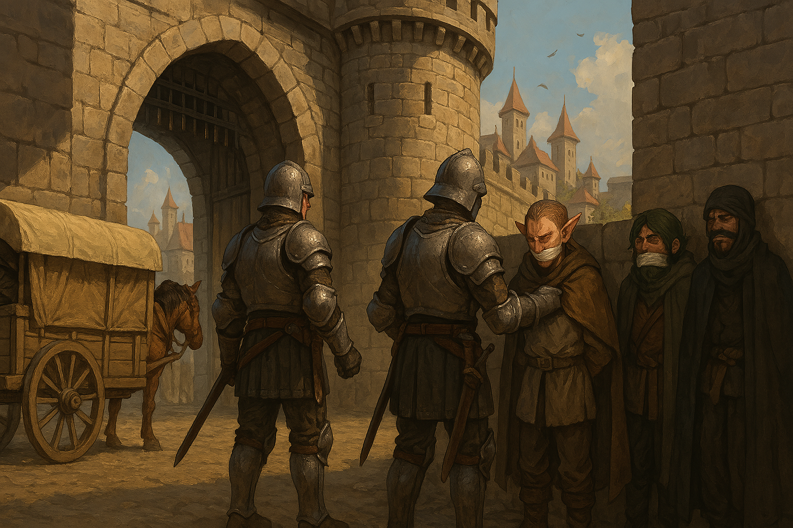

Chapter 1: Welcome to Macksohm
The Blooming of Macksohn


The Blooming of Macksohn
15048.11.07
在家亨於寇林菲爾德被士兵帶走，雷米前去搜集資訊後，台北市議員們上了帕拉丁的父親，馬格努斯爵士準備的馬車，朝著麥丁頓王國的首都麥克嵩前進。
路途中，烏犧奧泥悄悄帶著神王尼可跳下了馬車，與其他夥伴暫時的告別。剩下的一夥人花了大約一個月的時間，終於抵達了麥克嵩的城門口。
城外的衛兵將馬車攔了下來，詢問冒險者們的身份。帕拉丁下了車，表示自己是前侍衛隊副隊長馬格努斯爵士的兒子，卻被衛兵告知馬格努斯爵士在這裡已經沒有影響力了。情急之下，帕拉丁供出了「麥克嵩的紫羅蘭」，也就是他的親生母親之名。衛兵們討論後，帶著帕拉丁先進城，並把他帶到城門口的一間小木屋，等待紫羅蘭本人到來詢問。
帕拉丁外的眾人被帶下了車，而且也被認出是「沃瓦倫的惡魔」。衛兵們將大家壓在城牆邊，綁起他們的手腳和口部，也拿走了他們的武器和錢財，不准他們入城。
冒險者們試著用千方百計想要進到城內。首先，龍恩喊著自己是來自尖頂寺的武僧，一位衛兵表示自己是在尖頂寺附近的城鎮出生，肯定尖頂寺出來的僧侶都很可靠，於是他便帶著龍恩進城了。薩梅爾用他的魯特琴彈奏了一曲，訴說了自己在沃瓦倫發生的故事，試圖洗刷台北市議員的臭名，讓衛兵們聽了津津有味，也成功讓他進了城內。最後，剩下米多莉和YHWH兩人還在城外。一位衛兵在米多莉耳邊竊竊私語，想和他談條件，交換讓米多莉入城，但米多莉不願答應。最後YHWH利用他的百寶袋表演了殺死馬的把戲，成功取悅了衛兵。衛兵們希望能留下百寶袋，就放他們入城，但YHWH不願放手。最後，一名衛兵和YHWH與米多莉談了一個新的交易：他秀出了手上的一個符號—一個有十道光芒射出的太陽符號，並要兩人在城內協助手上有這個符號的人完成一件任務，任務的內容不會讓他們被逮捕，也不會要他們殺人。兩人同意後，便成功入了城。
麥克嵩的紫羅蘭，珊吉雅本人在衛兵的帶領下進到了帕拉丁所在的小木屋，開始了談判。帕拉丁請衛兵將駕馬車帶他們來到麥克嵩的馬伕帶了進來，請他代為說明。不過最後因為帕拉丁與馬伕沒有足夠的證據說明帕拉丁是紫羅蘭的親生兒子，珊吉雅便離開了。衛兵將帕拉丁綁在木屋內的椅子上，但是馬伕成功襲擊了衛兵。兩人將衛兵喬裝為馬伕，綁在椅子上，便將門關上。馬伕自己換上了衛兵的裝扮，假裝押解帕拉丁走在城內。同時，為了讓帕拉丁夠有犯人的偽裝，他的武器和魅力頭帶都暫時由馬伕保管。馬伕表示自己名叫約翰，不過帕拉丁執意要叫他希南。
入城的龍恩在衛兵的帶領下，來到了城內的一間酒館，日出酒館。他分享了自己在沃瓦倫要到的食譜，煎了牛排，意外的熱賣。
薩梅爾入城後，在廣場一處坐了下來，便開始彈琴，賺了點外快。
帕拉丁和薩梅爾都在廣場見到了一個他們熟悉的身影—雷米。雷米熱情的招呼兩人，並將兩人也帶到了日出酒館。薩梅爾在日出酒館內彈唱，也轉了一點外快。
YHWH和米多莉兩人入城後，戴上了YHWH在寇林菲爾德買的面具，試圖遮掩自己通緝犯的身份。兩人意外聽見了城門旁的小木屋內傳出了聲音。在思索許久後，兩人打開了小木屋的門，成功營救出了被換上了馬伕裝的衛兵。衛兵答應了他們的請求，擔任他們在城內的嚮導，作為兩人拯救他的酬勞。衛兵自稱名叫坎，是麥克嵩的當地人。他說明要先帶兩人去他家一趟，讓他換個衣服拿些東西。來到了日出酒館門口，坎表示自己住在這裡的二樓，於是推開了門。
日出酒館的門被推開，帕拉丁見到那個在小木屋內他與希南襲擊的衛兵，也就是YHWH和米多莉所認識的坎，便偷襲了他，卻失敗了。雷米見狀便跑到了門口，劃破了坎的喉嚨。坎的身體向雷米倒去，吸引了大家的注意。雷米只好表示這名男子意外昏了過去，結果日出酒館內竟然有醫生。醫生趕了過去，發現了坎已經死了，便大喊了一聲「殺人啦」。
酒館內一陣大亂鬥，冒險者們也分別進行著不同的行為：帕拉丁和希南在店中間抵擋圍過來的酒客、雷米威脅醫生不要搞事、YHWH先到門外擋著、米多莉試著扮演白臉制裁雷米、薩梅爾彈著琴置身事外，而正吃著自己煎的牛排的龍恩在意外和同時兼任主廚的老闆起衝突後，悠悠的到廚房內準備繼續煎牛排。在主廚和幾名酒客昏倒後，戰鬥暫時告了一段落。
雷米等人將昏倒的老闆與酒客抬到了廚房內的休息室，也將已經死去的坎塞到了百寶袋內。他們檢查了坎，發現他的手上也刺有十道光芒的太陽。雷米和YHWH試圖尋找坎提到的日出酒館二樓，卻無法在店內外找到任何能進入的方法，甚至懷疑會不會根本就沒有二樓。帕拉丁發現帶著自己武器與頭帶的希南竟然不見了。另外，雷米也打聽到了大約在一週後，城內將舉辦一場比賽，比賽的內容似乎是單純的比武錦標賽，獎金十分豐厚。
在大家處理完各種亂象後，龍恩以外的所有人決定離開酒館，而龍恩決定將酒館先當成他的基地。他向老闆詢問為何當時攻擊了他，老闆表示自己年幼時曾被龍人欺凌，因此對龍人懷有很嚴重的不安感，所以當下才攻擊龍恩。為了表示自己的歉意，老闆同意讓龍恩在日出酒館擔任廚師，同時使用休息室作為他工作期間的住處。
雷米帶著大家來到了麥克嵩的藝文特區。其中一處吸引了他們的注意力，是一個潔白寬敞的雙開大門，上方刻了「崔尼斯劇院」的字樣，不過門外卻沒有任何演出的公告。雷米推開了門，帶著大家來到了劇院的大廳。眾人買了票，進場看了每日下午2點到4點都會演出的「崔尼斯簡史」。眾人對於崔尼斯王朝的認識有多有少，因此對劇的理解多寡不太一樣。演員謝幕後，米多莉向售票亭的服務人員要了節目演出表，發現演出劇中主角，霍里森・圖卡，也就是崔尼斯王朝首任皇帝霍里森一世的演員叫摩西・寇里森，而贊助本場演出的是個叫做「柏納斯一族」的團體？組織？家族？米多莉並不清楚。一直沒有進入狀況的薩梅爾抱怨著這齣劇，表示自己彈魯特琴還比較精彩。此時，一名中年男子拍了拍他的肩膀，表示自己是個星探，如果薩梅爾有興趣，可以擔任他的經紀人。他遞給了薩梅爾一張名片，上面只有個音符的符號🎵，不過薩梅爾感受到了這張名片上有傳送術的魔法。男子表示，如果要找他，只要用大拇指在音符上連續點三下就可以了，說完便轉身離去。
龍恩在日出酒館的休息室內找到剛才昏迷的醫生，向他傳了話表示剛剛協助他逃離雷米魔爪的面具女士（米多莉）希望明晚在日出酒館內再和他見面。醫生同意了。
雷米帶著夥伴前往一家他所知道的便宜旅社，城門旅店。旅社在城市內較為窮困的區域，治安不好，但房間真的便宜。大家分了兩間雙人房以及一間單人房入住。
隨後，雷米帶著薩梅爾和帕拉丁回到藝文區，找了有較多街頭藝人演出的區域，讓薩梅爾表演，賺點錢。他們也隨後到附近的樂器行，想幫雷米買一把自己的魯特琴，卻發現以現有的錢財只能買得起兒童版的琴。
米多莉和YHWH想去找附近的教堂，於是和旅店老闆打聽消息。老闆凱文・波頓態度很不好，但是在兩人嘗試溝通後態度有所改善。老闆對城內盛行的宗教和麥克嵩的紫羅蘭都不太清楚，不過他表示他知道有個地方可以打聽各種八卦，便抄了個地址給米多莉。
兩人來到了指定的地址，破舊的房子內沒有燈光。小心翼翼地找到了房子地下室的樓梯口，慢慢走下。空蕩的房間被一個像是魔法壁爐的裝置點亮，房間的另一側，一個披掛著斗篷的人低著頭靜坐著，手肘靠在桌上。米多莉和YHWH向那個人打了招呼，一個小女孩的聲音喚著他們倆要拿出「有價值的東西」才能換到情報。可以說是身無分文的兩人最終拿出了有拉索斯文字的匕首，才換得一點點消息，確認麥克嵩的紫羅蘭確實有個私生子。兩人發現，在對話的過程中，靠著桌子的斗篷人完全沒有移動，因此起了疑心。米多莉一把撞開桌子，發現披著斗篷的是個假人。小女孩也向兩人表示交易破裂了。兩人把桌子和假人復原後，YHWH決定把感受到有魔法的斗篷帶走，放入了他的百寶袋內。走回了樓上，兩人對於剛剛所見所聞感到困惑，但也明白下一次，不能再是他們兩人過來了。而取走的魔法斗篷，也在兩人到附近雜貨店想賣出時消失了。
另一方面，龍恩在日出酒館和酒客們各方打聽，聽起來麥克嵩是個宗教多元的城市，沒有特別哪個宗教盛行。老闆也讓龍恩隔天休假，可以探索一下城市。
稍晚，眾人回到了日出酒館。雷米和帕拉丁玩了麥克嵩盛行的紙牌遊戲—雷米從小就有玩，但是卻一直不知道這遊戲的名字，只叫它「打牌」。然而，幾輪下來，雷米輸了帕拉丁不少，把手上帶回來原本要送給米多莉和YHWH的香腸輸掉了。
一位似乎認識雷米的男子示意他到了門外。自稱艾德的男人遞給了雷米一個有機關的陶杯，也和他閒聊了一下。雷米將陶杯收了起來，若無其事地回到了日出酒館內。
雷米也藉機找了米多莉，亮出了他手上的太陽徽記，表示要求他讓整個團隊都參與下週的比武大會。相對的，他會幫米多莉找回他被衛兵沒收的信物：津菈的護符。然而，雷米在衛兵駐所花了不少功夫拿回來的米多莉的背包內，卻是空無一物。
15048.11.07
After Jiaheng was taken by the guards in Korrignfield, and Lemmy went gathering information, the Taipei City Council went on the carriage provided by Paladin's Father, Syr Magnus, and headed towards Macksohn, the capital city of the Mattington Kingdom.
On the road, Usioni took King Knicol off the carriage quietly, and left the party temporarily. The remaining group spent about a month before they finally arrived the gates of Macksohn.
The guards at the gates stopped the carriage, asking the identity of the adventurers. Paladin got off the carriage, claiming that he was the son of the son of the former vice leader of the king's guard, Syr Magnus, but was told by the guards that his father had no power anymore. Desperately, Paladin gave out the name "the Violet of Macksohn", which was the name of his mother. The guards had a discussion, and took Paladin into the gate into a cabin to wait for the Violet herself.
The group other than Paladin were brought down the carriage, and recognised as "the Demons of Vowalon". The guards pushed them against the wall, tied their hands, feet, and cover their mouth, took their weapons and their money, forbidding them from entering the city.
The adventurers had to try all different ways to get into the city. First, Ron shouted that he was a monk from the Peak Temple. A guard, who was born in a village near the Peak Temple, confirmed that the monks from the Peak Temple were all trustworthy, and so Ron was released into the city. Samael played a song with his lute, telling their adventure in Vowalon, trying to wash away the bad reputation of the Demons of Vowalon. The guards enjoyed it, and let him in the city. Finally, Midori and YHWH were the only two left. A guard whispered at Midori's ear, wanting to negotiate with her, but Midori declined. Finally, YHWH played a trick and killed the horse with his bag of holding, which entertained the guards. The guards wanted the bag of holding, but YHWH refused. Finally, a guard made a deal with the two. He showed a tatto on his hand, which is a sign of a sun with ten rays. He asked the two to help a person in the city with that symbol on their hand, and promised that the mission wouldn't get them arrested, nor would make them kill people. They were finally sent in the gate after they agreed.
Xandria, the Violet of Macksohn, was led by the guards into the cabin where Paladin was in, and started negotiation. Paladin asked the guards to bring his coachman into the cabin, asking him to explain. However, due to the fact that Paladin and the coachman didn't have enough proof that Paladin was her son, Xandria left. The guard put Paladin onto the chair in the cabin and tied him up, but the coachman attacked the guard. The two dressed the guard as a coachman, tied him on the chair, and closed the door. The coachman disguised himself as a guard, escorted Paladin into the city. At the same time, the coachman had Paladin's weapons and his headband of charisma, so that Paladin looked more like a prisoner. The coachman told Paladin that his name was John, but Paladin insisted on calling him "Cena" instead.
Ron, who had entered the city, came to a tavern in the city named "Sunrise", led by the guard. He shared the recipe that he got in Vowalon, made some steak, and the steak got accidentally popular.
After entering the gate, Samael sat at the plaza, started playing his lute, and earned some coins.
Paladin and Samael both saw a familiar face at the plaza: Lemmy. Lemmy greeted the two passionately, and also took them to Sunrise. Samael played in Sunrise, and earned more coins.
After the two entered the gate, YHWH and Midori put on the masks that YHWH bought in Korringfield, trying to hide their identity as the wanted. The two accidentally heard sounds from the cabin near the gate. After thinking for a while, the two opened the door to the cabin, and rescied the guard who was dressed as a coachman. The guard granted their request to be a guide in the city as a payment of saving him. The guard introduced himself as Kahn, a local Macksohnian. He mentioned that he would take the two to his house so he could change his outfit and take stuffs. At the entrance of Sunrise, Kahn said that he lived upstairs at the second floor, and he opened the door.
As the door opened, Paladin sat the guard that he and Cena attacked in the cabin, whom, to YHWH and Midori, was known as Kahnm and ambushed him, but failed. Lemmy saw it and ran to the door, slit opened Kahn's throat. Kahn's body leaned towards Lemmy, attracted everyone's attention. Lemmy claimed that this man simply fainted, but he didn't expect there to be a doctor in the tavern. The doctor found Kahn to be dead after checking, and yelled "murder".
A fight broke out in the tavern, with the members of the group all doing different things: Paladin and Cena stood at the middle of the shop, blocking the customers, Lemmy threatening the doctor, YHWH blocked the entrance, while Midori, who played the good cop, judged Lemmy. Samael played his lute like it had nothing to do with him. Ron, who was enjoying his own steak was attacked by the owner/chef, and continued on making his steak after the brawl. The brawl came to an end when the chef and several customers fainted.
Lemmy and the group carried the owner and the customers to the lounge in the kitchen, and also Kahn into the bag of holding. They checked on Kahn, seeing the sun tatto on his hand, too. Lemmy and YHWH tried to look for the upstairs of the tavern, mentioned by Kahn, but couldn't find any entrance. They even doubted if there really was a second floor. Paladin found Cena, who had his weapons and his headband of charisma, gone. Other than that, Lemmy learned that there will be a tournament in town about a week later. It seemed to simply be a fighting tournament with a grand prize.
After the group finished tidying up, all but Ron decided to leave the tavern, while Ron decided to make it his base for now. He asked the owner why he attacked him, the owner said that he was bullied by dragonborns when he was young, and so he felt insecure around dragonborns. To show his apology, the owner agreed to let Ron act as chef in Sunrise, and the lounge as his room to stay.
Lemmy brought the group to the Arts District in Macksohn. A place caught their eyes. A white and wide double doors, with the name "the Trinix Theatre" carved on it, but no other performancce announcement outside the door. Lemmy pushed opened the door, leading the group to the lobby of the theatre. The group bought ticket to "the Brief History of Trinix", which aired every day afternoon between 2 and 4 o'clock. The group had different amount of understandings to the history of the Trinix Era, and so they had varying degrees of understandings to the play. After the actors took their curtain call, Midori asked for the program schedule from the ticket stand, and found the actor of the protagonist, Hollison Tuka, which was the first emperor of the Trinix Era, Hollison the First, was an actor named Moses Collison. And the sponsor behind the play was a group called "the Berners". An organization? A family? Midori had no idea. Samael, who had been confused about the play complained, and thought that he could've played his lute more entertaining than the play. A mid-aged man tapped his shoulder, saying that he was a talent scout. He could be his agent if Samael was interested. The man handed Samael a name card with a symbol of a note 🎵 on it, but Samael sensed transportation magic from it. The man said that if Samael wanted to find him, simply tap on the symbol three times with his thumb, at it would do. He left afterwards.
Ron found the doctor who was fainted earlier at the lounge in Sunrise, and told him that the masked lady (Midori) who helped him from Lemmy, wanted to meet him again tomorrow night at Sunrise. The doctor agreed.
Lemmy brought the group to a cheap hostel that he knew, named Gates Inn. The hostel was in the impoverished area in town, also with poor public security, but the rooms were really cheap. The group had two double rooms and a single room for the night.
Afterwards, Lemmy took Samael and Paladin back to the Arts District and found an area with more street performers, for Samael to perform and earn some coins. They also headed to the instrument store nearby to buy Lemmy a lute for his own, but found that with the money they had, he could only get a lute for children.
Midori and YHWH wanted to visit churches nearby, and asked Kevin Bolden, the owner of Gates Inn. Kevin had a bad attitude, but got better after communication. Kevin didn't know much about the religions in the city, nor the Violet of Macksohn, but he mentioned that he knew a place that could ask for gossips, and so he wrote an address to Midori.
The two went to the location, it was an old house with no light. They carefully found the entrance to the descending stairs, and slowly walked down. The empty room was lit by a structure like a magical fireplace. A cloaked fugure with their head tilted down sat at the opposite direction, with thei elbows on the table. Midori and YHWH said hello to the person, and a voice of a little girl told them to take "something valuable" to exchange for information. The two, who were basically penniless, finally took out two daggers with Laxthosian on them, and only got to know that the Violet of Macksohn truly had an illegitimate child. The two found that during the conversation, the cloaked figure behind the table didn't move at all, and so they got suspicious. Midori slammed the table, only to find that it was a manakin under the cloak. The little girl announced that the trade fell through. The two recovered the table and the manakin, but YHWH decided to take the cloak with him, which he sensed had magical on it. He put it in his bag of holding. When they got upstairs, the two felt confused about what they just saw, but they also knew that it couldn't be the two to come to this place next time. The magical cloak that YHWH took was gone when they planned to sell it at the groceries store nearby.
Ron, who was at Sunrise, tried to gather information from the customers. He heard that there were all kinds of religions in Macksohn, with no particular major religion. The owner wanted Ron to take a day off tomorrow, so he could explore the city.
Later that night, the group gathered at Sunrise. Lemmy and Paladin played a card game that was popular in Macksohn. Lemmy used to play when he was a kid, but never knew the name of the card game, only calling it "play cards". However, Lemmy lost quite a lot to Paladin, even lost the sausages that he was going to give to Midori and YHWH.
A man who seemed to know Lemmy asked him out of the tavern. The man, who called himself Ed, gave Lemmy a ceramic cup with mechanism, and chatted with Lemmy. Lemmy put the cup into his bag, and walked back in Sunrise like nothing happened.
Lemmy found the chance to talked to Midori, showing the sunshine tattoo on his hand, wanting her to make the whole group enter the tournament next week. He would, in return, help Midori find her amulet of Keinra, which was taken by the guards. However, Midori's bag, which Lemmy took a lot of effort takind back from the guard station, was empty.